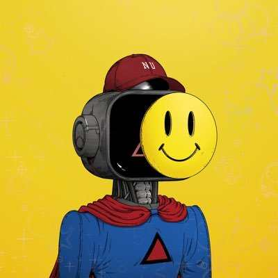
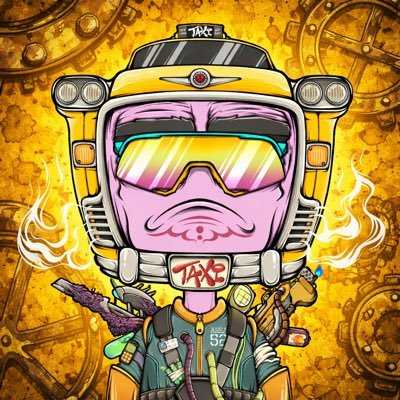
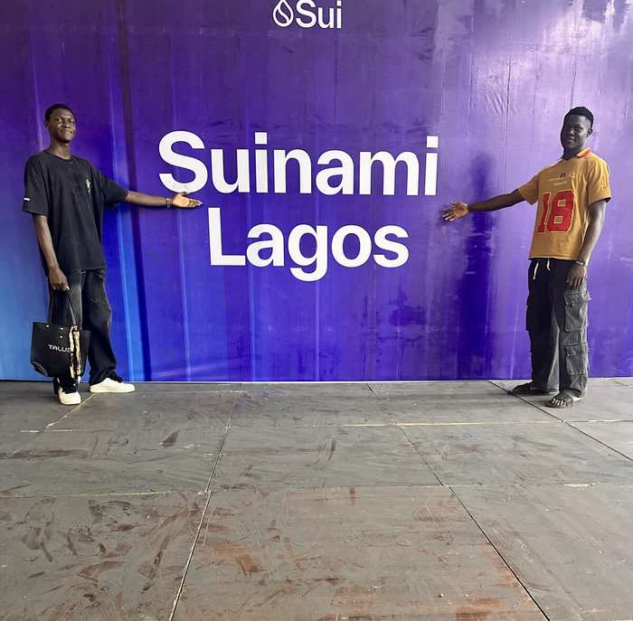
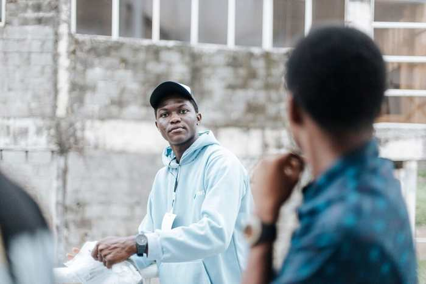
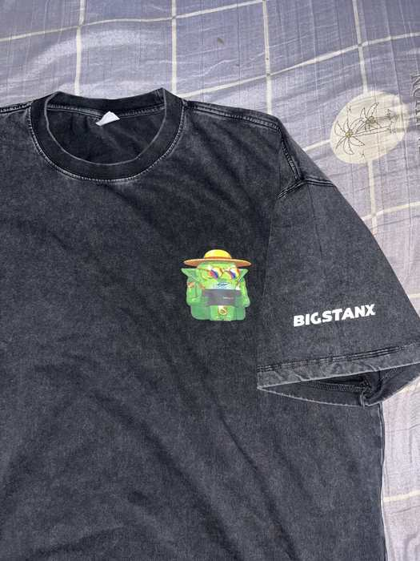
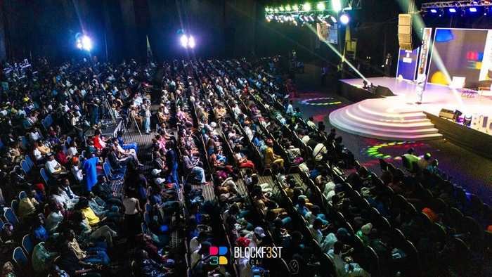

I interview. I stream.
I host Spaces. I create.
All in Web3.
Video content creator, interviewer, X Space host, and live streamer fully embedded in the Web3 space. I don't just cover the culture — I drive it. On camera, on stage, and on-chain.
I'm BigstanXHQ — a video content creator, interviewer, X Space host, and live streamer living fully in the Web3 space. Four lanes. One mission: make the culture impossible to ignore.
I sit down with founders, builders, and everyday people and pull out stories nobody else is telling. I host X Spaces that bring communities together in real time. I stream live from events, markets, and the streets. And I create video content that hits — short-form, long-form, always real.
In Web3, I'm not a tourist. I'm embedded. I know the protocols, the people, and the culture — and I bring all of it to the camera every single time.
Work With Me
Every great brand has layers. Bigstanx operates across two visual identities — each one an NFT, each one a statement. Together they form a complete picture of who I am: the storyteller and the machine, the human and the signal.
The machine that smiles through it all. Optimistic. Unstoppable. This is the face that shows up for the community — always on, always present, always ready to create.
Gears turning in the dark. The builder. The grinder. This is the face behind the camera — obsessed with craft, culture, and the mechanics of storytelling that actually moves people.
I sit down with founders, traders, builders, and everyday people and extract stories that resonate. Conversational, unscripted, built to hold attention from start to finish.
I take the camera outside. Street interviews, event coverage, community voices — raw, relatable content that feels lived-in because it is. The internet wasn't built in a studio.
Breaking down blockchain, DeFi, NFTs, and crypto culture in a language real people understand. I make Web3 feel human — not like a whitepaper.
I host X Spaces that pull real audiences — AMAs, community calls, market breakdowns, Web3 debates. On stream, I go live from events, studios and the streets. If it's happening in real time, I'm there and the audience is with me.
Got a Web3 project worth talking about? I integrate it into genuine storytelling — not a forced ad read. Your project gets featured like it belongs in the narrative.
Every great interview has a moment. I find it, cut it, and push it. Clips engineered for TikTok, Reels, and X — turning one conversation into a week of content.
My flagship long-form interview series where I sit down with Web3 founders, crypto traders, and cultural builders for unfiltered, unscripted conversations. No PR teams. No talking points. Just the real story behind the project — and the person building it.
Watch the SeriesHitting the streets at major blockchain conferences — asking real attendees the questions everyone else was too formal to ask.
Watch ClipsWeekly live stream breaking down crypto market moves, on-chain data, and community sentiment in real time — with guests, hot takes, and zero sugarcoating.
Tune In
No studio. No set. Just showing up where it matters and letting the camera do its job. This is the BigstanXHQ way — out in the world, fully present, always rolling. November 2025, Lagos.
Book Me
Mid-sentence. Fully locked in. This is the exact moment an interview becomes a story — when the camera disappears and the truth comes out. No studio. No script. Just the kind of raw exchange that only happens when you earn someone's trust. November 2025, Lagos.
Book a Session
The job doesn't start when you press record — it starts when you walk in the room. Being physically present, building trust, reading the atmosphere. That's what separates content that feels real from content that just looks real. November 2025, Lagos, Nigeria.
Work Together12,000 participants. 50+ countries. 31 global speakers. Africa's Web3 Super Bowl — and BigstanXHQ was in the building. Held October 11, 2025 in Lagos under the theme BUIDL · BRIDGE · BECOME, Blockfest Africa is where the continent's builders, creators, and innovators converge. I was on the ground capturing every moment, every conversation, and every story worth telling.
Visit Blockfest Africa
Sui Network brought its ecosystem tour to the heart of Lagos on November 15, 2025 — and the energy was undeniable. Held at HighPoint Event Centre, Ikeja, Suinami Lagos united builders, creators, and explorers around one of the fastest-growing Layer 1 blockchains in the world. I was there, camera in hand, making sure Africa's voice in Web3 was documented and amplified.
View EventThis is what real adoption looks like — not a tweet, not a chart. A packed room of young Nigerians showing up in person for the future of the internet. Suinami Lagos drew hundreds of attendees hungry to learn, build, and connect on Sui. I wasn't just covering the event. I was part of the movement.
Read CoverageI don't just cover Web3 — I live in it. I've been in the trenches through bull runs and bear markets, NFT summers and protocol collapses. I know the culture, I know the language, and I know how to make it click for people who are just arriving.
My content builds bridges between the on-chain world and the real one. Because the best story in Web3 isn't the price chart — it's the people behind it.
This is where it all started. Before the camera, before the interviews, before the stages — there was Sui. The community pulled me in, the technology held me, and I never left.
I'm the admin running Sui Lagos Family — one of the biggest Sui communities in Nigeria with over 1,000+ members and growing every day. We educate, we onboard, we advocate, and we build. The Sui Lagos Family isn't just a group — it's a movement, and I'm at the centre of it.
Sui is a Layer 1 blockchain built for mass adoption — and Lagos is ground zero for its African expansion. SuiHub Lagos — Sui's 4th global physical hub worldwide — is right here in our city. We're not just participating in Web3. We're building the infrastructure for Africa's blockchain future.
"Sui didn't just give me a blockchain to believe in — it gave me a community to belong to. Sui Lagos Family is proof that Web3 in Africa isn't coming. It's already here."
— BigstanXHQ · Admin, Sui Lagos Family
Need a Web3 interviewer? Want to be featured on a Space or stream? Got a project that deserves real storytelling on video? Whether you're a founder, a brand, or just someone with a story — the camera is always ready. Let's make something real.